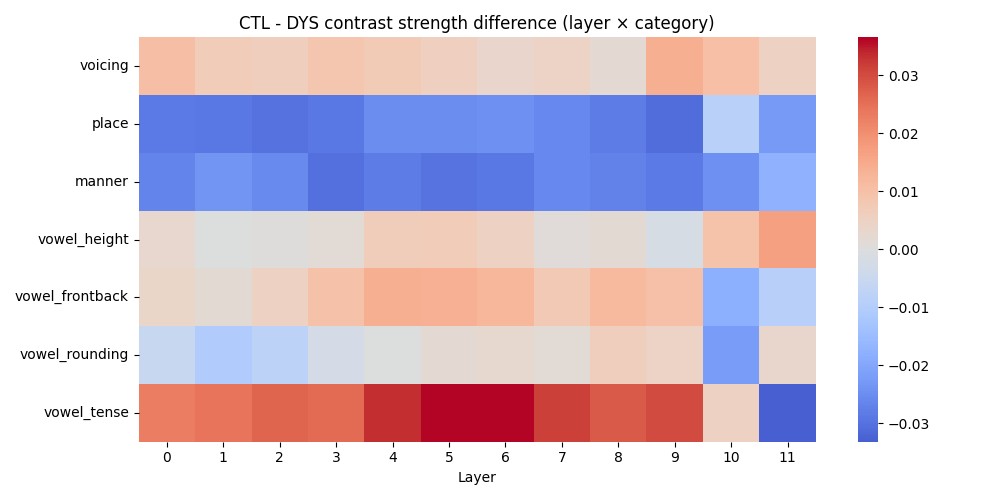
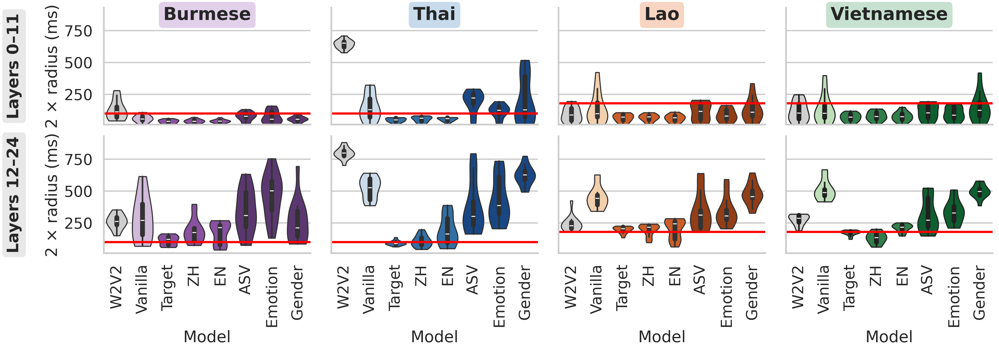
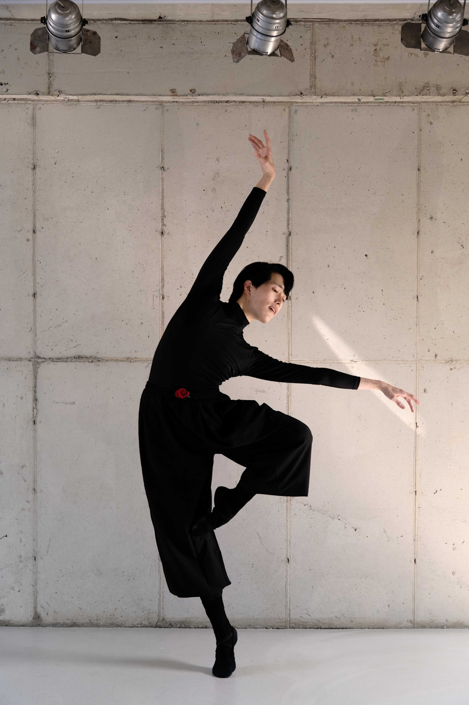
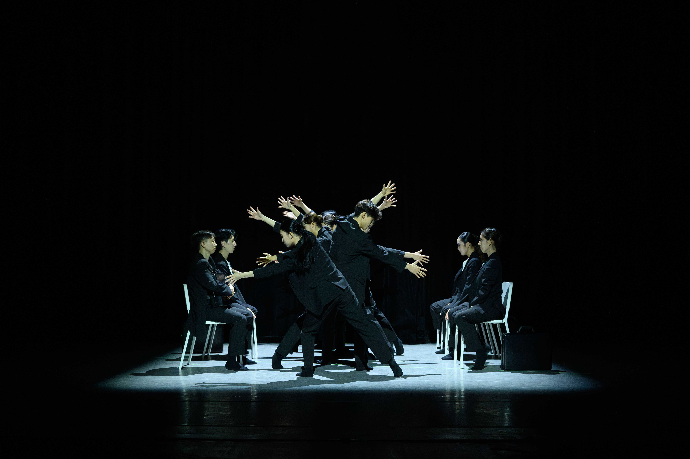
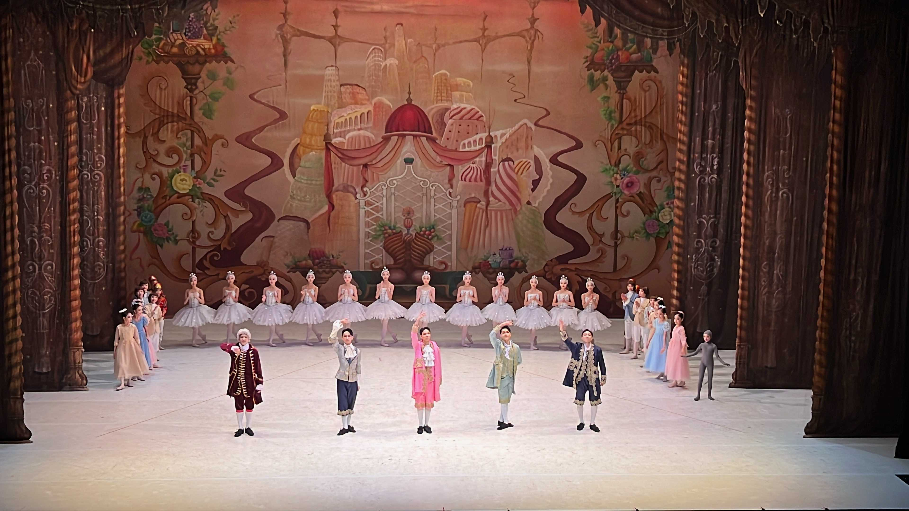

|
Minu Kim
(김민우, 金民友: "friend of the people")
KAIST School of Electrical Engineering
N24-2105, 291 Daehak-ro, Yuseong-gu Email: minus@kaist.ac.kr |
| 03/2024 – Present |
Korea Advanced Institute of Science and Technology (KAIST), Daejeon, Republic of Korea M.S. in Electrical Engineering |
| 03/2017 – 02/2024 |
Seoul National University (SNU), Seoul, Republic of Korea B.A. in Linguistics B.S. in Computational Sciences B.S. in Artificial Intelligence B.S. in Industrial Engineering B.B.A. in Business Administration Leave of Absence for Alternative Military Service (09/2021 – 08/2022), Ministry of Employment and Labor, Republic of Korea |
Publications * indicates equal contribution.
| Preparation | |
|  | M. Kim, J.W. Kim. What Makes Dysarthric Speech Recognition Fail? Layer-Wise Probing of Articulatory Coordination in Self-supervised Speech Models.. In preparation. |
| 2026 | |
|  | M. Kim, J.S. Um, H. Kim. How Far Do SSL Speech Models Listen for Tone? Temporal Focus of Tone Representation under Low-resource Transfer. IEEE International Conference on Acoustics, Speech, and Signal Processing (ICASSP) 2026. Under review. [pdf] |
| 2025 | |
 |
J. Park*, M. Kim*, D.Y. Hong, J. Lee. Compositional Phoneme Approximation for L1-Grounded L2 Pronunciation Training. International Joint Conference on Natural Language Processing & Asia-Pacific Chapter of the Association for Computational Linguistics (IJCNLP-AACL) 2025. [pdf] |
 |
M. Kim, K. Jang, H. Kim. ParaNoise-SV: Integrated Approach for Noise-Robust Speaker Verification with Parallel Joint Learning of Speech Enhancement and Noise Extraction . ISCA Conference of the International Speech Communication Association (Interspeech) 2025. Oral Presentation. [pdf] |
 |
M. Kim, K. Jang, H. Kim. Improving Cross-Lingual Phonetic Representation of Low-Resource Languages Through Language Similarity Analysis. IEEE International Conference on Acoustics, Speech, and Signal Processing (ICASSP) 2025. [pdf] |
Research Experience
| 03/2024 – Present |
Statistical Speech and Sound Computing Lab, KAIST, Daejeon, Republic of Korea • Conducted cross-lingual phoneme & tone recognition for low-resource languages and analyzed linguistic patterns |
| 08/2025 – Present |
Wonkwang University Hospital (Collaboration), Iksan, Republic of Korea • Analyzed how dysarthric articulatory patterns distort phonetic representations in SSL speech models |
| 08/2024 – Present |
Independent Research on Language Education Technology, Seoul, Republic of Korea • Developed computational frameworks for L1-grounded L2 pronunciation training |
| 06/2023 – 08/2023 |
Music and Audio Research Group, SNU, Suwon, Republic of Korea • Built speech-to-action robotics systems and multimodal processing models |
| 09/2019 – 12/2019 |
Fieldwork on Korean Mungyeong Dialects, SNU, Mungyeong, Republic of Korea • Documented and analyzed endangered Korean dialects through fieldwork |
Teaching Experience
- Instructor, AI & Data Analytics Academy, NIPA (Ministry of Science and ICT, Korea) (Fall 2020)
- TA, EE432 Digital Signal Processing, KAIST (Spring 2025, Fall 2025)
- TA, EE305 Introduction to Electronics Design Lab, KAIST (Fall 2024)
- TA, 430.306 Signals and Systems, SNU (Fall 2023)
- TA, 035.001 Digital Computer Concept and Practice, SNU (Spring 2021)
- Tutor, L0444.000400 Basic Computing, SNU (2021–2023)
Extracurricular Activities
| 2023 | SNU Social Responsibility, Samarkand, Uzbekistan • Adapted Korean children’s books into Uzbek/Russian and developed multi-sensory kindergarten education program |
| 2023 | Korea Ballet Stars Company, Seoul, Republic of Korea • Performed in classical and contemporary pieces in collaboration with Mongolian and German artists |
| 2020 | Growth Hackers, Seoul, Republic of Korea • Led NLP/deep learning trainings; analyzed K-pop trends in 23 countries and optimized business data solutions |
| 2017, 2018 | SNU Global Community Service, Ho Chi Minh City, Vietnam • Organized visual impairment awareness campaign and charity activities, supporting local disabled facilities in Vietnam |
| 2017 | Les Passionnés, Seoul, Republic of Korea • Acted in French-language musicals with a student ensemble at Hankuk Univ. of Foreign Studies |
Honors & Scholarships
- Korean Government Scholarship – Full tuition and stipend support (2024–2025)
- Cum Laude, SNU (2024)
- Chiak Foundation Scholarship – Full tuition support (2017–2023)
- Silla Culture Foundation Scholarship (2021–2023)
- Class of ’82 Alumni Scholarship, SNU Business School (2023)
- Hansung TNI Scholarship (2022)
- Teaching Assistant Excellence Scholarship, SNU Business School (2021)
- Work-Study Scholarship, SNU Library (2019–2020)
Creative Interests
I also enjoy performing arts, especially collaborative work in classical and contemporary pieces. Being on stage with wonderful artists motivates me and keeps me connected to creativity beyond research!




© 2025 Minu Kim Thanks Dr. June-Woo Kim for the template.